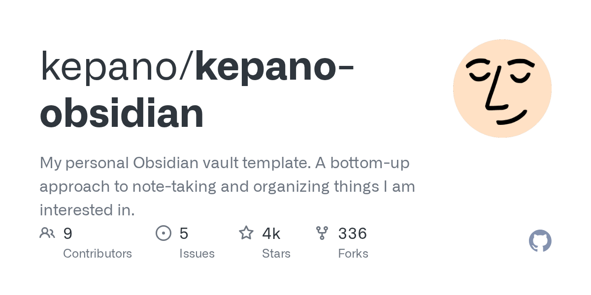
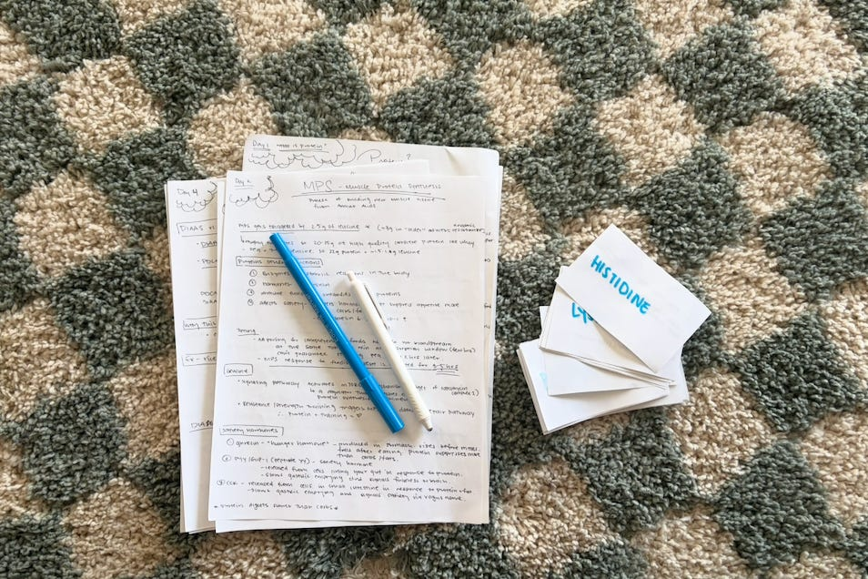
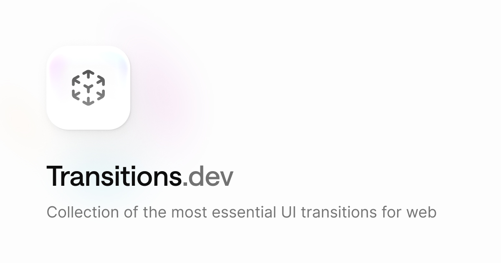

Good AI links, saved as I find them. Newest first.
NYC Simulator
Procedurally generated 3D Manhattan in Three.js from real city data: 86k street segments, 305k building footprints, ~10k census-based synthetic residents, and an LLM concierge that reasons over the whole simulation.

kepano/kepano-obsidian
The Obsidian CEO's personal vault template, open sourced. A bottom-up approach to note-taking; clone it and point Claude Code at it as a second brain starting point.

Attempting to Become an "Expert" With AI: Part 1
A two-week experiment testing whether AI can close a competence gap: a Claude-built 14-day curriculum with retrieval practice, skeptic roleplay, and a capstone. Full prompts included.

Transitions.dev: Essential transitions for web apps
Collection of the most essential UI transitions for web apps. Copy as CSS or React, or install as a skill for Claude, Cursor, or Codex.